Disclaimer
This page was written in 2018 when I was learning digital signal processing basics during my undergrad in electrical engineering. It is not an accurate representation of my current knowledge in the matter, please check newer blog posts to see what I'm up to nowadays.
Algorithms
Negative
Quadrants
Object Counting
Histogram Equalisation
Movement Detection
spatial-domain filtering
Tilt-shift
Homomorphic Filter
Enhanced pointillism with canny edge detector
K-means art
Negative
The first algorithm simply performs a colour inversion in a given area and outputs the result. To understand the procedure it's important to understand how RGB digital images store colour information. When the sub-pixel matrix consists of 3 different independent colour channels (red, blue and green), a combination of intensity of those channels results in the perceived output colour.
Multiple different pixel format standards exist, but if your image is targetting the web it's sane to assume we have 8 bits of precision per colour channel. Which gives us 24 bits per pixel or 16777216 different possible colours.
The colour "white" is an equal combination of all colours, so in our system to output white we need maximum intensity in all three of our colour channels, which means white is (255, 255, 255) in decimal, or #FFFFFF in hexadecimal.
The inverse of a colour is simply the difference between absolute white and the colour itself, and since the pixel data is stored in binary we can perform a bitwise_not in order to invert the value of all the bits (equivalent of subtracting their original value from 255).
Here we can see our original image:
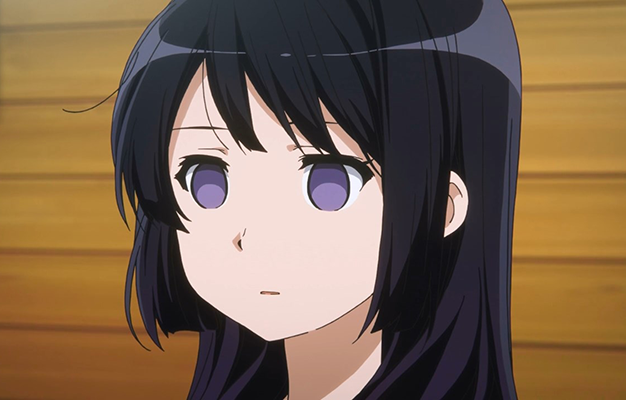
The following program receives the coordinates from the user, and then performs the inversion:
#include <opencv2/opencv.hpp>
#include <iostream>
using namespace std;
using namespace cv;
int main(int argc, char** argv) {
Mat img = imread(argv[1]);
if (!img.data) {
cout << "imagem nao carregou corretamente" << endl;
return(-1);
}
Mat img_out = Mat::zeros(img.rows, img.cols, CV_8UC3);
int pos_xi, pos_yi, pos_xf, pos_yf;
cout << "digite o pixel x inicial:" << endl;
cin >> pos_xi;
cout << "digite o pixel y inicial:" << endl;
cin >> pos_yi;
cout << "digite o pixel x final:" << endl;
cin >> pos_xf;
cout << "digite o pixel y final:" << endl;
cin >> pos_yf;
namedWindow("janela", WINDOW_AUTOSIZE);
imshow("janela", img);
waitKey();
for (int i = 0; i < img.rows; i++) {
for (int j = 0; j < img.cols; j++) {
if (i > pos_xi && i < pos_xf && j > pos_yi && j < pos_yf) {
bitwise_not(img.at(i, j), img_out.at(i, j));
}
else {
img_out.at(i, j) = img.at(i, j);
}
}
}
imshow("janela", img);
namedWindow("janelaout", WINDOW_AUTOSIZE);
imshow("janelaout", img_out);
waitKey();
return 0;
}
inverse.cpp
We can see the resulting image here:
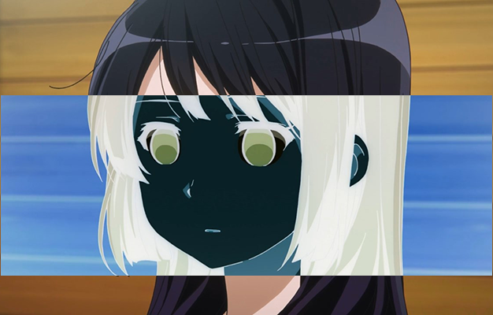
Quadrants
An image can be divided into 4 quadrants, the following example aims to swap the position of those quadrants maintaining the original pixel values.
Here we can see the original quadrant configuration of any image:

As requested, the inversion of quadrants should be done in the following manner:
And finally, we can see the program that does that for us:
#include <opencv2/opencv.hpp>
#include <iostream>
using namespace std;
using namespace cv;
int main(int argc, char** argv) {
Mat img = imread(argv[1]);
if (!img.data) {
cout << "imagem nao carregou corretamente" << endl;
return(-1);
}
Mat img_out = Mat::zeros(img.rows, img.cols, CV_8UC3);
namedWindow("janela", WINDOW_AUTOSIZE);
imshow("janela", img);
waitKey();
for (int i = 0; i < img.rows; i++) {
for (int j = 0; j < img.cols; j++) {
if (i < img.rows / 2 && j < img.cols / 2) {
img_out.at(i + img.rows / 2, j + img.cols / 2) = img.at(i, j);
}
else if (i < img.rows / 2 && j > img.cols / 2) {
img_out.at(i + img.rows / 2, j - img.cols / 2) = img.at(i, j);
}
else if (i > img.rows / 2 && j < img.cols / 2) {
img_out.at(i - img.rows / 2, j + img.cols / 2) = img.at(i, j);
}
else if (i > img.rows / 2 && j > img.cols / 2) {
img_out.at(i - img.rows / 2, j - img.cols / 2) = img.at(i, j);
}
}
}
imshow("janela", img);
namedWindow("janelaout", WINDOW_AUTOSIZE);
imshow("janelaout", img_out);
waitKey();
return 0;
}
quadrants.cpp
First let's see how the original image looked like:
And how it looks now after we swapped its quadrants:
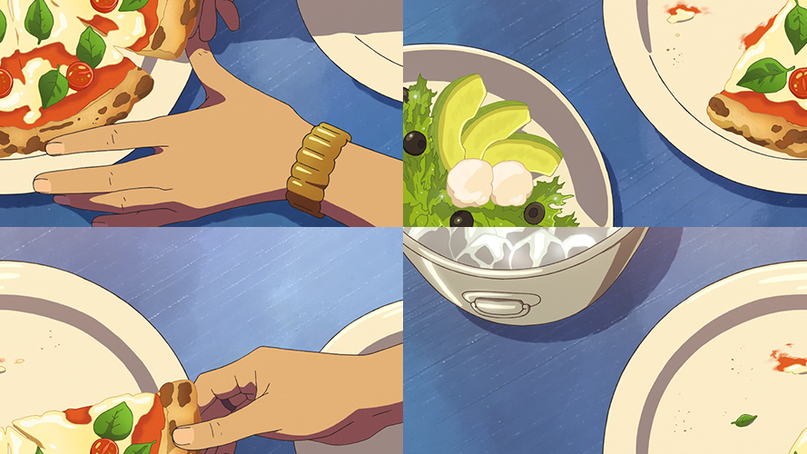
Object counting
Now we'll learn how to count objects, in order to increase the complexity of the algorithm and its accuracy, it's important to differentiate objects with holes and objects without.
The following image will be the input of the program:

The very first thing the program does is delete all the objects that are touching the borders of the image. After that, the background is "painted" in a certain colour of choice in order to differentiate it from the holes. Then, the program will search for white pixels and paint the entire agglomerate of white pixels with a given colour. This colour changes each time the program finds another agglomerate of white pixels, which are the objects.
After all the objects are found and painted with a corresponding colour, the program will search for holes and paint those holes with the same colour it used to paint the object which this hole is inside of, which prevents the program from counting objects with 2 holes wrongly.
The program can be seen here:
#include <opencv2/opencv.hpp>
#include <iostream>
using namespace std;
using namespace cv;
int main(int argc, char** argv) {
Mat image = imread(argv[1], CV_LOAD_IMAGE_GRAYSCALE);
if (!image.data) {
cout << "imagem nao carregou corretamente" << endl;
return(-1);
}
long int obj_total = 0;
long int obj_with_holes = 0;
long int obj_found_colour = 2;
long int obj_colour_aux = 0;
CvPoint p;
namedWindow("Labelling", CV_WINDOW_KEEPRATIO);
imshow("Labelling", image);
waitKey();
for (int i = 0; i < image.rows; i++) {
for (int j = 0; j < image.cols; j++) {
if (i == 0 || j == 0 || i == image.rows - 1 || j == image.cols - 1) {
image.at(i, j) = 255;
}
}
}
p.x = 0; p.y = 0;
floodFill(image, p, 0); //Border touching holes are removed
imshow("Labelling", image);
waitKey();
floodFill(image, p, 1); //Background colour set
imshow("Labelling", image);
waitKey();
for (int i = 0; i < image.rows; i++) {
for (int j = 0; j < image.cols; j++) {
if (image.at(i, j) == 255) {
obj_total++; //Find the objects
p.x = j;
p.y = i;
floodFill(image, p, obj_found_colour);
obj_found_colour++;
}
}
}
imshow("Labelling", image);
waitKey();
for (int x = 0; x < image.rows; x++) {
for (int y = 0; y < image.cols; y++) {
if (image.at(x, y) == 0 && image.at(x, y - 1) != obj_colour_aux) {
obj_colour_aux = image.at(x, y - 1);
p.x = y;
p.y = x;
floodFill(image, p, obj_colour_aux);
obj_with_holes++; //Objects with holes are found
}
else if (image.at(x, y) == 0 && image.at(x, y - 1) == obj_colour_aux) {
p.x = y;
p.y = x;
floodFill(image, p, obj_colour_aux);
}
}
}
imshow("Labelling", image);
waitKey();
imwrite("labeling.png", image);
cout << "Number of elements without holes: " << obj_total - obj_with_holes << endl;
cout << "Number of elements with holes: " << obj_with_holes << endl;
waitKey();
return 0;
}
counting.cpp
Following the program, first we delete all the objects that touch the border:
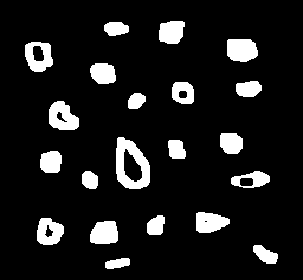
Then, we count the total number of objects while painting them:
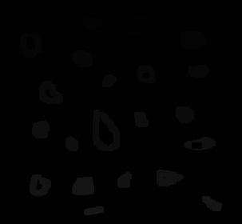
And then, we count the holes taking into consideration to colour of the object:
Finally, we can see the end result in our terminal:
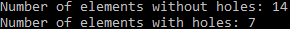
To make sure the program wouldn't count objects with multiple holes wrongly, a modification was done in the input image:
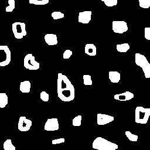
And then we can go through the same sequence of images following the code again:
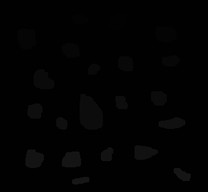
We can check how many objects and objects with holes were counted in our terminal output, it's important to notice the numbers didn't change:
Histogram Equalisation
Our aim is to equalise the histogram of a greyscale image, maximising its dynamic range to the highest possible value using the existing greyscale values.
This will be our input image:
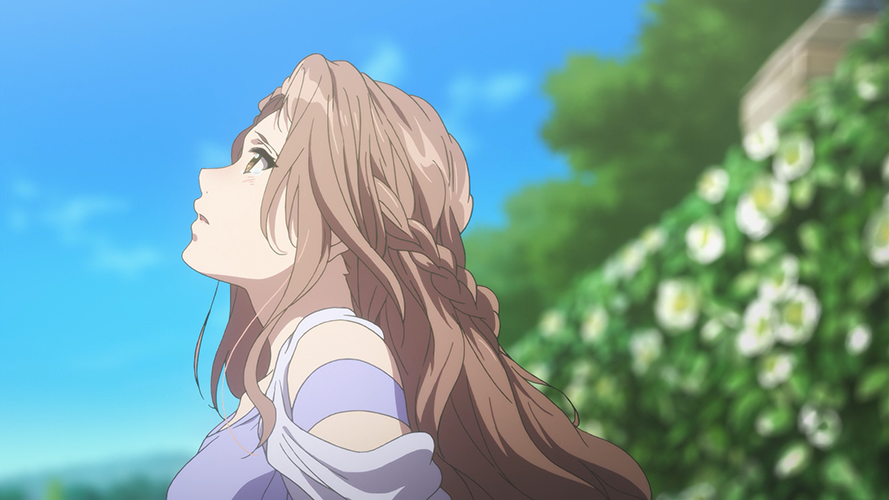
The first thing we need to do is to load the image as a greyscale image, using a property of OpenCV itself to do it:
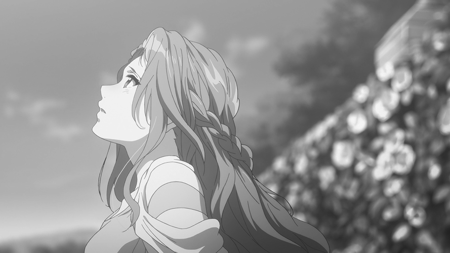
The program that calculates and plots the histograms of both the input image and its equalised output is shown below:
#include <opencv2/opencv.hpp>
#include <iostream>
using namespace cv;
using namespace std;
int main(int argc, char** argv) {
Mat img, img_eql, hist, hist_eql;
img = imread(argv[1], CV_LOAD_IMAGE_GRAYSCALE);
equalizeHist(img, img_eql);
bool uniform = true;
bool acummulate = false;
int nbins = 128;
float range[] = { 0, 256 };
const float *histrange = { range };
int width = img.cols;
int height = img.rows;
int histw = nbins, histh = nbins / 4;
Mat hist_img(histh, histw, CV_8UC1, Scalar(0, 0, 0));
Mat hist_img_eql(histh, histw, CV_8UC1, Scalar(0, 0, 0));
calcHist(&img, 1, 0, Mat(), hist, 1, &nbins, &histrange, uniform, acummulate);
calcHist(&img_eql, 1, 0, Mat(), hist_eql, 1, &nbins, &histrange, uniform, acummulate);
normalize(hist, hist, 0, hist_img.rows, NORM_MINMAX, -1, Mat());
normalize(hist_eql, hist_eql, 0, hist_img.rows, NORM_MINMAX, -1, Mat());
hist_img.setTo(Scalar(0));
hist_img_eql.setTo(Scalar(0));
for (int i = 0; i<nbins; i++) {
line(hist_img, Point(i, histh), Point(i, cvRound(hist.at<float>(i))), Scalar(255, 255, 255), 1, 8, 0);
}
for (int i = 0; i<nbins; i++) {
line(hist_img_eql, Point(i, histh), Point(i, cvRound(hist_eql.at<float>(i))), Scalar(255, 255, 255), 1, 8, 0);
}
hist_img.copyTo(img(Rect(10, 10, nbins, histh)));
hist_img_eql.copyTo(img_eql(Rect(10, 10, nbins, histh)));
namedWindow("Original", WINDOW_AUTOSIZE);
namedWindow("Equalised", WINDOW_AUTOSIZE);
imshow("Original", img);
imshow("Equalised", img_eql);
waitKey();
return 0;
}
equalise.cpp
The first plot is simply the original image in greyscale plus its histogram:
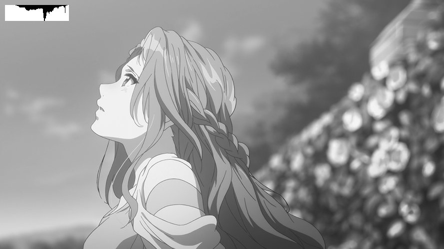
And now we can see the same plot, but for the equalised image:
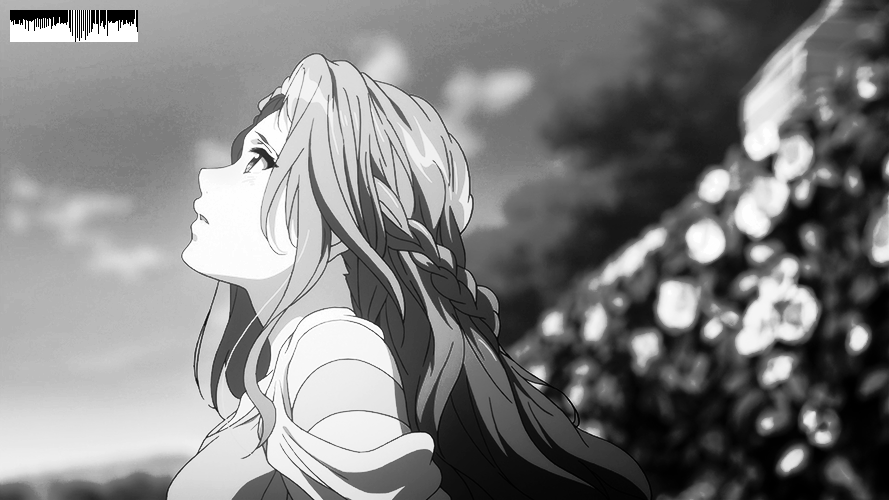
It's important to notice that the histogram plotted has its origin in the top left corner, the intensity axis goes from there to bottom and the axis that represents different values goes from left to right. The background of the histogram is white, and the actual histogram is what can be seen as black on top of this white background.
The code was originally designed to be used with still images, however with some modifications it can be used for videos (or camera inputs, which are also video streams).
In the following example, a video was used intead of a camera input because of technical limitations (lack of a camera). It can be used with a camera swapping "argv[1]" in "VideoCapture" to "0". "0" opens the camera instead.
#include <opencv2/opencv.hpp>
#include <iostream>
using namespace cv;
using namespace std;
int main(int argc, char** argv) {
Mat img, img_eql, hist, hist_eql;
VideoCapture cap(argv[1]);
while (true) {
cap >> img;
cvtColor(img, img, CV_BGR2GRAY);
equalizeHist(img, img_eql);
bool uniform = true;
bool acummulate = false;
int nbins = 128;
float range[] = { 0, 256 };
const float *histrange = { range };
int width = img.cols;
int height = img.rows;
int histw = nbins, histh = nbins / 4;
Mat hist_img(histh, histw, CV_8UC1, Scalar(0, 0, 0));
Mat hist_img_eql(histh, histw, CV_8UC1, Scalar(0, 0, 0));
calcHist(&img, 1, 0, Mat(), hist, 1, &nbins, &histrange, uniform, acummulate);
calcHist(&img_eql, 1, 0, Mat(), hist_eql, 1, &nbins, &histrange, uniform, acummulate);
normalize(hist, hist, 0, hist_img.rows, NORM_MINMAX, -1, Mat());
normalize(hist_eql, hist_eql, 0, hist_img.rows, NORM_MINMAX, -1, Mat());
hist_img.setTo(Scalar(0));
hist_img_eql.setTo(Scalar(0));
for (int i = 0; i<nbins; i++) {
line(hist_img, Point(i, histh), Point(i, cvRound(hist.at<float>(i))), Scalar(255, 255, 255), 1, 8, 0);
}
for (int i = 0; i<nbins; i++) {
line(hist_img_eql, Point(i, histh), Point(i, cvRound(hist_eql.at<float>(i))), Scalar(255, 255, 255), 1, 8, 0);
}
hist_img.copyTo(img(Rect(10, 10, nbins, histh)));
hist_img_eql.copyTo(img_eql(Rect(10, 10, nbins, histh)));
namedWindow("Original", WINDOW_AUTOSIZE);
namedWindow("Equalised", WINDOW_AUTOSIZE);
imshow("Original", img);
imshow("Equalised", img_eql);
if (waitKey(30) >= 0) break;
}
return 0;
}
equalise_video.cpp
A video can better demonstrate how the program works when it has a video stream as an input:
Movement Detection
As we know, an image is a matrix of pixels, which are arrays of subpixels containing information. A greyscale image only has a single subpixel per pixel, and can only assume values between black and white. A RGB or a YUV image however, has 3 channels per pixel (3 sub-pixels) and can assume different colours. In either case, an image is a matrix.
A video, then, is simply a sequence of matrices. Each matrix in the sequence represents a frame, and the temporal change in values is perceived as motion.
Our objective is to be able to detect movements in a video stream, and we'll use our knowledge of what a video is in order to achieve it. Since a video is a series of matrices, in order to detect movement we can compare those matrices and see if their values differ in a significant way. If they do, it's evident that there was movement. If they don't, it's obvious that the image stayed still.
The program simply finds the difference between the pixels of the current frame and the previous frame, creating a summation of all those values and deciding whether there was movement or not depending on how high this value is.
The program also displays the difference between frames in the screen, and it's very easy to interpret the image since black values mean that the values of the frames didn't change and white values mean that those values indeed changed significantly (remember the difference between frame N and frame N - 1 is what's being displayed).
Without further ado, here is the program that detects movement:
#include <opencv2/opencv.hpp>
#include <iostream>
using namespace cv;
using namespace std;
int main(int argc, char** argv) {
long frame_counter = 0, difference_total_value = 0;
Mat frame, frame_past, difference;
VideoCapture cap(argv[1]);
int width = cap.get(CV_CAP_PROP_FRAME_WIDTH);
int height = cap.get(CV_CAP_PROP_FRAME_HEIGHT);
difference = Mat::zeros(height, width, CV_8UC1);
while (true) {
cap >> frame;
cvtColor(frame, frame, CV_BGR2GRAY);
difference_total_value = 0;
for (int i = 0; i < frame.rows; i++) {
for (int j = 0; j < frame.cols; j++) {
if (frame_counter == 0) {
difference.at<uchar>(i, j) = 0;
} else {
difference.at<uchar>(i, j) = abs(frame.at<uchar>(i, j) - frame_past.at<uchar>(i, j));
}
difference_total_value += difference.at<uchar>(i, j);
}
}
frame_past = frame;
frame_counter++;
cout << "frame: " << frame_counter << " difference = " << difference_total_value << endl;
if (difference_total_value > 150000) {
cout << "THERE'S MOVEMENT!" << endl;
}
namedWindow("Difference", WINDOW_AUTOSIZE);
imshow("Difference", difference);
if (waitKey(30) >= 0) break;
}
return 0;
}
movement.cpp
For the reader, the most important part to understand here is how the difference summation is calculated.
Inside a loop, the program simply makes the difference between the current frame and the previous frame, if the frame_counter is still 0 the difference is also 0 since we don't have any previous frame yet. When frame_counter is higher than 0 though, the program will calculate the difference between each pixel in the current frame and its counterpart in the previous frame, and then it'll add this difference into a difference summation.
Here we can see what was just explained above:
difference_total_value = 0;
for (int i = 0; i < frame.rows; i++) {
for (int j = 0; j < frame.cols; j++) {
if (frame_counter == 0) {
difference.at(i, j) = 0;
} else {
difference.at(i, j) = abs(frame.at(i, j) - frame_past.at(i, j));
}
difference_total_value += difference.at(i, j);
}
}
And now an example of the program running, and the terminal shouting that there was movement:

We can see a grey parachutist in the image, while its background remains almost completely black. This happens because while the parachutist is moving in the original video, the sky (which is our background) remains still.
In this example the threshold between "no movement" and "movement" was a total difference summation of 150000. The video below shows how the program works when running:
The number of the current frame is printed at the terminal, and the total difference summation value between it and the previous frame is as well. If this value is higher than our threshold, the program also prints that there was movement. As already explained, what we see closer to black means that there wasn't movement in that area. And what we see closer to white, means that it's moving.
Spatial-domain Filtering
To filter in the spatial domain, we appropriate ourselves from a convolution property. The property tells us that a product in the frequency domain is the equivalent of a convolution in the time domain. In our case "time" is simply the value variation across an axis, and we have 2 axis creating a plane.
The program, as requested in the assignment should alternate between certain masks depending on the key pressed during execution. Starting from our original program filtroespatial.cpp, the objective is to add the option of doing a gaussian filtering before applying the laplacian one.
The modified program is shown below:
#include <opencv2/opencv.hpp>
#include <iostream>
using namespace cv;
using namespace std;
void printmask(Mat &m) {
for (int i = 0; i<m.rows; i++) {
for (int j = 0; j<m.cols; j++) {
cout << m.at<float>(i, j) << ",";
}
cout << endl;
}
}
void menu() {
cout << "\npressione a tecla para ativar o filtro: \n"
"a - calcular modulo\n"
"m - media\n"
"g - gauss\n"
"v - vertical\n"
"h - horizontal\n"
"l - laplaciano\n"
"esc - sair\n";
}
int main(int argvc, char** argv) {
VideoCapture video(argv[1]); //use this for videos
//cap = imread(argv[1]); //use this for images
float media[] = { 1,1,1,1,1,1,1,1,1 };
float gauss[] = { 1,2,1,2,4,2,1,2,1 };
float horizontal[] = { -1,0,1,-2,0,2,-1,0,1 };
float vertical[] = { -1,-2,-1,0,0,0,1,2,1 };
float laplacian[] = { 0,-1,0,-1,4,-1,0,-1,0 };
Mat cap, frame, frame32f, frameFiltered, frameFiltered2;
Mat mask(3, 3, CV_32F), mask_gauss(3, 3, CV_32F), mask_lap(3, 3, CV_32F);
Mat result, result1, result_lapgauss;
double width, height, min, max;
bool lap_gauss_aux = false, absolut = true;
char key;
width = video.get(CV_CAP_PROP_FRAME_WIDTH); //use this for videos
height = video.get(CV_CAP_PROP_FRAME_HEIGHT); //use this for videos
//width = cap.cols; //use this for images
//height = cap.rows; //use this for images
std::cout << "width = " << width << "\n";;
std::cout << "height = " << height << "\n";;
namedWindow("spatialfilter", 1);
mask_gauss = Mat(3, 3, CV_32F, gauss);
scaleAdd(mask_gauss, 1 / 16.0, Mat::zeros(3, 3, CV_32F), mask_gauss);
mask_lap = Mat(3, 3, CV_32F, laplacian);
mask = Mat(3, 3, CV_32F, media);
scaleAdd(mask, 1 / 9.0, Mat::zeros(3, 3, CV_32F), mask);
swap(mask, mask);
menu();
while (true) {
video >> cap; //comment this when using images as input
cvtColor(cap, frame, CV_BGR2GRAY);
imshow("original", frame);
frame.convertTo(frame32f, CV_32F);
key = (char)waitKey(10);
if (lap_gauss_aux) {
filter2D(frame32f, frameFiltered, frame32f.depth(), mask_gauss, Point(1, 1), 0);
filter2D(frameFiltered, frameFiltered2, frameFiltered.depth(), mask_lap, Point(1, 1), 0);
frameFiltered2 = abs(frameFiltered2);
frameFiltered2.convertTo(result_lapgauss, CV_8U);
imshow("spatialfilter", result_lapgauss);
} else {
filter2D(frame32f, frameFiltered, frame32f.depth(), mask, Point(1, 1), 0);
if (absolut) {
frameFiltered = abs(frameFiltered);
}
frameFiltered.convertTo(result, CV_8U);
imshow("spatialfilter", result);
}
if (key == 27) break; // esc pressed!
switch (key) {
case 'a':
menu();
absolut = !absolut;
lap_gauss_aux = false;
break;
case 'm':
menu();
mask = Mat(3, 3, CV_32F, media);
scaleAdd(mask, 1 / 9.0, Mat::zeros(3, 3, CV_32F), mask);
printmask(mask);
lap_gauss_aux = false;
break;
case 'g':
menu();
mask = mask_gauss;
printmask(mask_gauss);
lap_gauss_aux = false;
break;
case 'h':
menu();
mask = Mat(3, 3, CV_32F, horizontal);
printmask(mask);
lap_gauss_aux = false;
break;
case 'v':
menu();
mask = Mat(3, 3, CV_32F, vertical);
printmask(mask);
lap_gauss_aux = false;
break;
case 'l':
menu();
mask = Mat(3, 3, CV_32F, laplacian);
printmask(mask);
lap_gauss_aux = false;
break;
case 'q':
lap_gauss_aux = true;
break;
default:
break;
}
}
return 0;
}
spatialfilters.cpp
The program can be used with images or videos, simply alternating between a few set of lines already commented in the code itself. The image used as input is shown below:
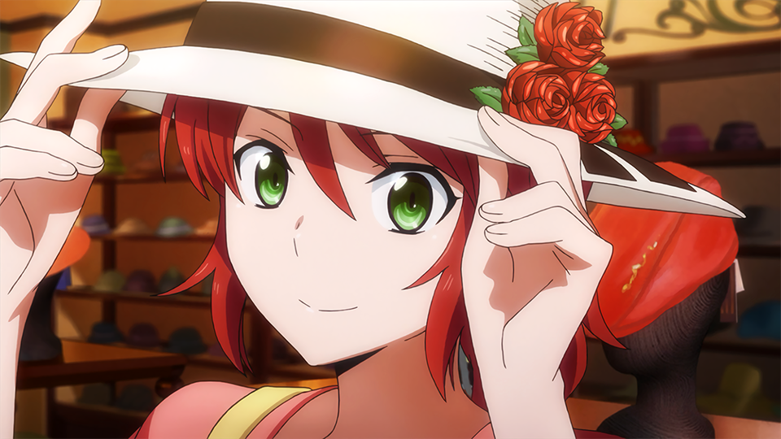
The first thing done is the convertion of the original image to greyscale:
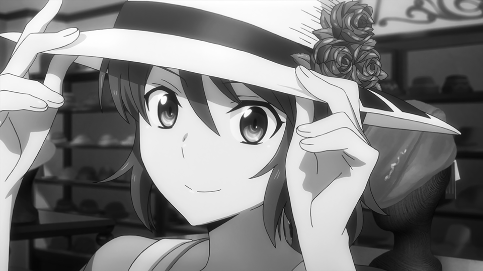
The user can alternate between different masks using the keyboard, the following list of options are available:
And we can see the result of all the filters:
Module:
Median:
Gauss:
Vertical:
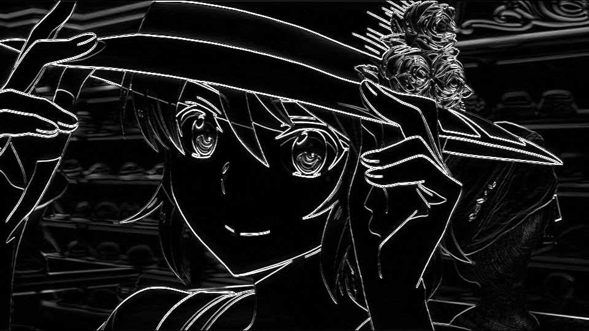
Horizontal:
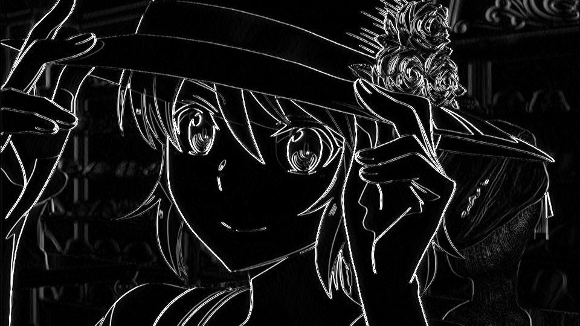
Laplacian:
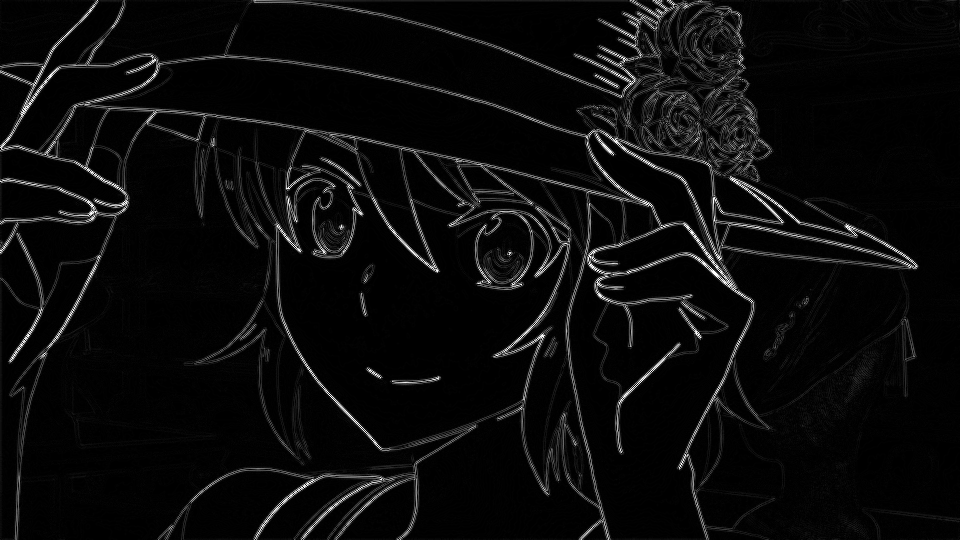
Gauss + laplacian:
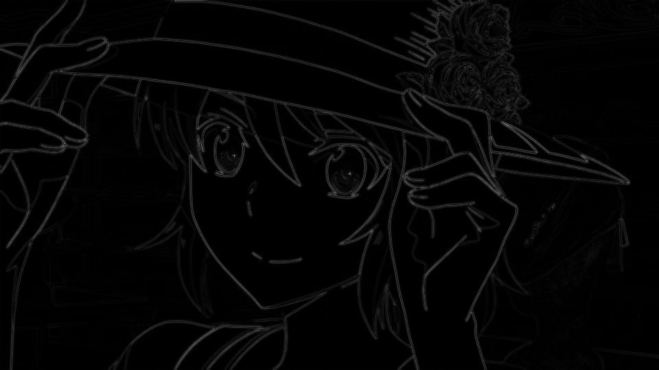
It's easy to see that applying a gaussian blur before applying the laplacian filter makes the output cleaner and smoother.
Tilt-shift
In this section we'll do a selective focus algorithm, as if we were filming with special lenses.
Let me first show the code, and then we'll learn what it does:
#include <iostream>
#include <opencv2/opencv.hpp>
#include <math.h>
using namespace cv;
using namespace std;
int main(int argvc, char** argv) {
Mat img_in = imread(argv[1]);
Mat img_blurred = Mat::zeros(img_in.rows, img_in.cols, CV_32FC3);
Mat img_out = Mat::zeros(img_in.rows, img_in.cols, CV_32FC3);
Mat img_focused = Mat::zeros(img_in.rows, img_in.cols, CV_32FC3);
Mat img_unfocused = Mat::zeros(img_in.rows, img_in.cols, CV_32FC3);
Mat mask_focus = Mat(img_in.rows, img_in.cols, CV_32FC3, Scalar(0, 0, 0));
Mat mask_unfocus = Mat(img_in.rows, img_in.cols, CV_32FC3, Scalar(1, 1, 1));
imshow("input", img_in);
waitKey();
float unfocus_aux = 0.35; //Edit this to change how much of the original image will stay focused
int pos_i = unfocus_aux*img_in.rows;
int pos_f = img_in.rows - unfocus_aux*img_in.rows;
int decay = 60; //Edit this to change how fast it'll decay
Vec3f mask_function_value;
for (int i = 0; i < img_in.rows; i++) {
for (int j = 0; j < img_in.cols; j++) {
mask_function_value[0] = (tanh((float(i - pos_i) / decay)) - tanh((float(i - pos_f) / decay))) / 2;
mask_function_value[1] = (tanh((float(i - pos_i) / decay)) - tanh((float(i - pos_f) / decay))) / 2;
mask_function_value[2] = (tanh((float(i - pos_i) / decay)) - tanh((float(i - pos_f) / decay))) / 2;
mask_focus.at<Vec3f>(i, j) = mask_function_value;
}
}
mask_unfocus = mask_unfocus - mask_focus;
//This section shows the masks
imshow("focus mask", mask_focus);
imshow("unfocus mask", mask_unfocus);
waitKey();
img_in.convertTo(img_in, CV_32FC3);
GaussianBlur(img_in, img_blurred, Size(7, 7), 0, 0);
img_focused = img_in.mul(mask_focus);
img_unfocused = img_blurred.mul(mask_unfocus);
//This section only shows the blurred image
img_blurred.convertTo(img_blurred, CV_8UC3);
imshow("img_blurred", img_blurred);
waitKey();
img_out = img_focused + img_unfocused;
img_out.convertTo(img_out, CV_8UC3);
//This section only shows the components of the final image
img_focused.convertTo(img_focused, CV_8UC3);
img_unfocused.convertTo(img_unfocused, CV_8UC3);
imshow("img_focused", img_focused);
imshow("img_unfocused", img_unfocused);
waitKey();
imshow("output", img_out);
waitKey();
return 0;
}
tiltshift.cpp
Now let's understand what the program does. First it simply reads its input and creates matrices that will be used later.
The input image used is shown below:

The program then, generates an auxiliar image with hyperbolic sines with the same size as the input image, we'll call this the focus mask:
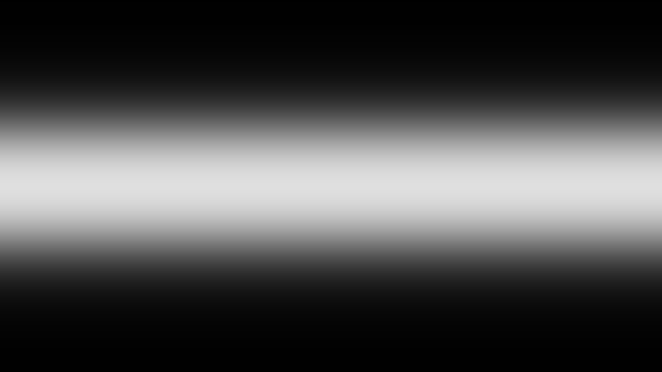
Using the image previously generated, we generate its inverse (the "unfocus mask") with a simple subtraction from a white matrix:
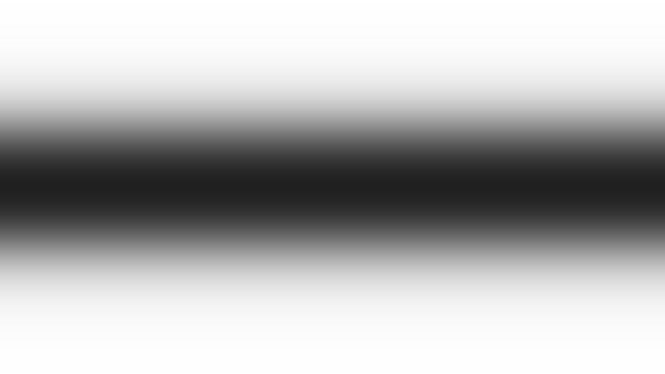
We then create a blurred version of the original image through a gaussian blur filter, this image will be used as our unfocused version of the original image:
The focus mask then multiplies the original image, and we get the focused portion of our final image:
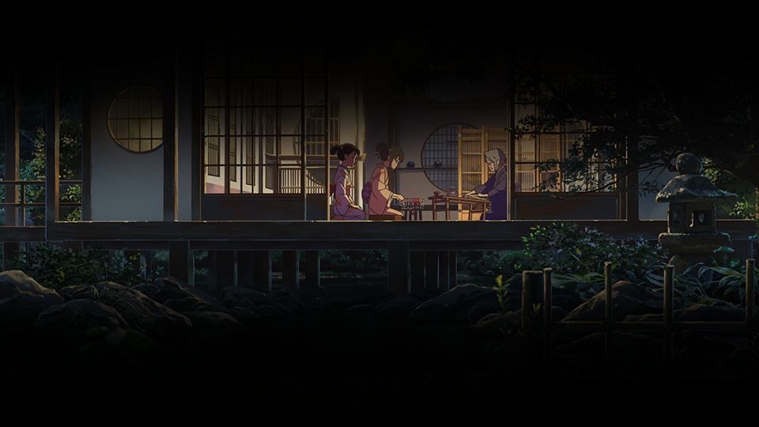
The same is done with the blurred version and the unfocus mask:
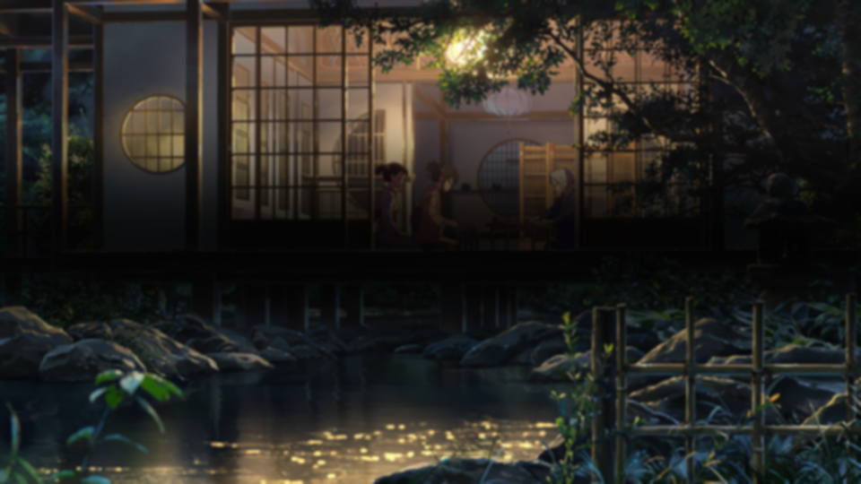
Finally, to arrive at our intended result, we simply sum the focused image and the unfocused one:
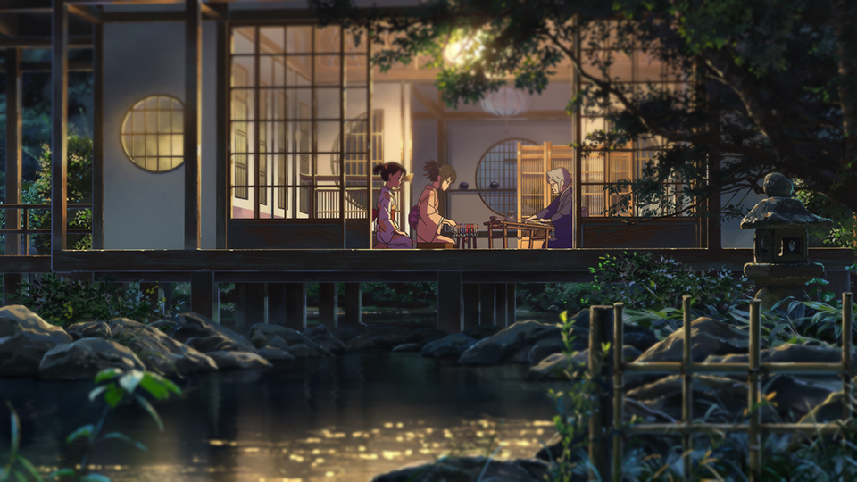
We can see that, when compared to the original image, the output image's vertical extremities seem to be out of focus. However, the centre of it stayed sharp and clear.
We can utilise the same effect to create a video that looks like it was filmed from a miniature, and make it more convincing including a frame skip effect which is common on those videos to fake motion.
In order to be used with videos the code needs to be modified, and we can see the modified version below:
#include <iostream>
#include <opencv2/opencv.hpp>
#include <math.h>
using namespace cv;
using namespace std;
int main(int argvc, char** argv) {
VideoCapture video(argv[1]);
Mat img_in, img_discard;
int cols = video.get(CV_CAP_PROP_FRAME_WIDTH);
int rows = video.get(CV_CAP_PROP_FRAME_HEIGHT);
Mat img_blurred = Mat::zeros(rows, cols, CV_32FC3);
Mat img_out = Mat::zeros(rows, cols, CV_32FC3);
Mat img_focused = Mat::zeros(rows, cols, CV_32FC3);
Mat img_unfocused = Mat::zeros(rows, cols, CV_32FC3);
Mat mask_focus = Mat(rows, cols, CV_32FC3, Scalar(0, 0, 0));
Mat mask_unfocus = Mat(rows, cols, CV_32FC3, Scalar(1, 1, 1));
int frame_skip = 2; //Sets how many frames to skip between frames
int pass_frame = 0;
float unfocus_aux = 0.35; //Edit this to change how much of the original image will stay focused
int pos_i = unfocus_aux*rows;
int pos_f = rows - unfocus_aux*rows;
int decay = 60; //Edit this to change how fast it'll decay
Vec3f mask_function_value;
for (int i = 0; i < rows; i++) {
for (int j = 0; j < cols; j++) {
mask_function_value[0] = (tanh((float(i - pos_i) / decay)) - tanh((float(i - pos_f) / decay))) / 2;
mask_function_value[1] = (tanh((float(i - pos_i) / decay)) - tanh((float(i - pos_f) / decay))) / 2;
mask_function_value[2] = (tanh((float(i - pos_i) / decay)) - tanh((float(i - pos_f) / decay))) / 2;
mask_focus.at<Vec3f>(i, j) = mask_function_value;
}
}
mask_unfocus = mask_unfocus - mask_focus;
//This section shows the masks
imshow("focus mask", mask_focus);
imshow("unfocus mask", mask_unfocus);
while (true) {
if (pass_frame == 0) {
video >> img_in;
} else {
video >> img_discard;
}
img_in.convertTo(img_in, CV_32FC3);
GaussianBlur(img_in, img_blurred, Size(7, 7), 0, 0);
img_focused = img_in.mul(mask_focus);
img_unfocused = img_blurred.mul(mask_unfocus);
//This section only shows the blurred image
img_blurred.convertTo(img_blurred, CV_8UC3);
imshow("img_blurred", img_blurred);
//waitKey();
img_out = img_focused + img_unfocused;
img_out.convertTo(img_out, CV_8UC3);
//This section only shows the components of the final image
img_focused.convertTo(img_focused, CV_8UC3);
img_unfocused.convertTo(img_unfocused, CV_8UC3);
imshow("img_focused", img_focused);
imshow("img_unfocused", img_unfocused);
//waitKey();
if (pass_frame == 0) {
pass_frame = frame_skip;
}
else {
pass_frame -= 1;
}
imshow("output", img_out);
if (waitKey(30) >= 0) break;
}
return 0;
}
tiltshift_video.cpp
As we can see the skeleton of the code remains the same, and the divergence to the original code is related to acquiring frames and passing those frames to the matrices that will process the information and generate our intended result.
Since we'll now run the program with a video as its input, it's important to know how the original video looks like:
In this example, since the video's resolution is the same as the image's resolution in the previous example, our masks will look identical to those already shown before. The frame skipping logic was set to skip 2 frames every frame that's passed to the algorithm. This number needs to be tweaked in order to create a better miniature effect.
We can see the output video below. Due to the fact that we're throwing 2/3 of the frames away, but holdind the already passed frames until a new frame can be passed, it looks slower than the original:
We can however, "fix" the motion speed problem by encoding the video with a lower frame persistance time:
Homomorphic Filter
The homomorphic filtering simultaneously normalises brightness across an image and increases contrast, since illumination and reflectance combine multiplicatively, we can make those components additive by taking the logarithm of the image and then we can separate those in the frequency domain. Illumination variations can be seen as as multiplicative noise, which we can reduce through filtering.
In order to improve the image by making its illumination more even, the high-frequency components are increased and low-frequency components are decreased, because the high-frequency components are assumed to represent mostly the reflectance in the scene (the amount of light reflected off the object in the scene), whereas the low-frequency components are assumed to represent mostly the illumination in the scene. That is, high-pass filtering is used to suppress low frequencies and amplify high frequencies, in the log-intensity domain.
#include <iostream>
#include <opencv2/opencv.hpp>
#define RADIUS 20
using namespace cv;
using namespace std;
void deslocaDFT(Mat &image){
Mat tmp, A, B, C, D;
image = image(Rect(0, 0, image.cols & -2, image.rows & -2));
int cx = image.cols / 2;
int cy = image.rows / 2;
A = image(Rect(0, 0, cx, cy));
B = image(Rect(cx, 0, cx, cy));
C = image(Rect(0, cy, cx, cy));
D = image(Rect(cx, cy, cx, cy));
A.copyTo(tmp);
D.copyTo(A);
tmp.copyTo(D);
C.copyTo(tmp);
B.copyTo(C);
tmp.copyTo(B);
}
int main(int argc, char **argv){
Mat imaginaryInput, complexImage, multsp;
Mat padded, filter, mag;
Mat image, imagegray, tmp;
Mat_<float> realInput, zeros;
vector<Mat> planos;
image = imread(argv[1]);
float mean;
int dft_M, dft_N;
dft_M = getOptimalDFTSize(image.rows);
dft_N = getOptimalDFTSize(image.cols);
copyMakeBorder(image, padded, 0,
dft_M - image.rows, 0,
dft_N - image.cols,
BORDER_CONSTANT, Scalar::all(0));
zeros = Mat_<float>::zeros(padded.size());
complexImage = Mat(padded.size(), CV_32FC2, Scalar(0));
filter = complexImage.clone();
tmp = Mat(dft_M, dft_N, CV_32F);
float gama_h = 100;
float gama_l = 510;
float c = 10;
float D_0 = 10;
for (int i = 0; i < dft_M; i++){
for (int j = 0; j < dft_N; j++){
tmp.at<float>(i, j) = (gama_h - gama_l) *
(1.0 - exp(-1.0 * (float)c * ((((float)i - dft_M / 2.0) *
((float)i - dft_M / 2.0) + ((float)j - dft_N / 2.0) *
((float)j - dft_N / 2.0)) / (D_0 * D_0)))) + gama_l;
}
}
Mat comps[] = {tmp, tmp};
merge(comps, 2, filter);
cvtColor(image, imagegray, CV_BGR2GRAY);
imshow("original", imagegray);
copyMakeBorder(imagegray, padded, 0,
dft_M - image.rows, 0,
dft_N - image.cols,
BORDER_CONSTANT, Scalar::all(0));
planos.clear();
realInput = Mat_<float>(padded);
planos.push_back(realInput);
planos.push_back(zeros);
merge(planos, complexImage);
dft(complexImage, complexImage);
deslocaDFT(complexImage);
mulSpectrums(complexImage, filter, complexImage, 0);
planos.clear();
split(complexImage, planos);
mean = abs(planos[0].at<float>(dft_M / 2, dft_N / 2));
merge(planos, complexImage);
deslocaDFT(complexImage);
cout << complexImage.size().height << endl;
idft(complexImage, complexImage);
planos.clear();
split(complexImage, planos);
normalize(planos[0], planos[0], 0, 1, CV_MINMAX);
imshow("filtrada", planos[0]);
waitKey();
return 0;
}
homomorphic.cpp
The input image is shown below:
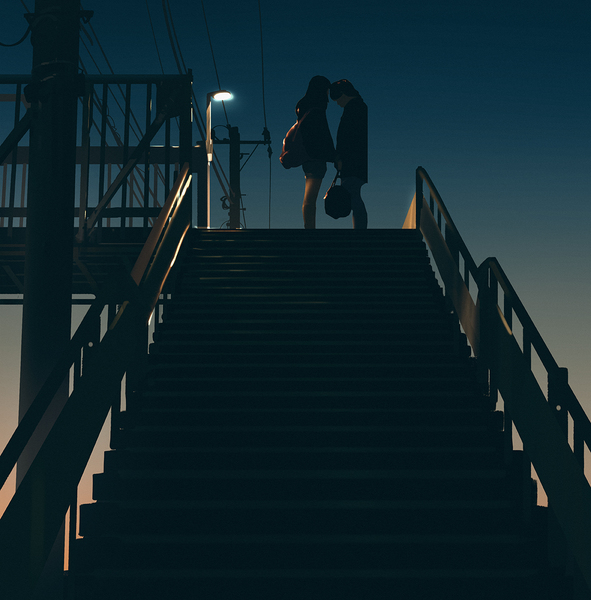
And its greyscale version:
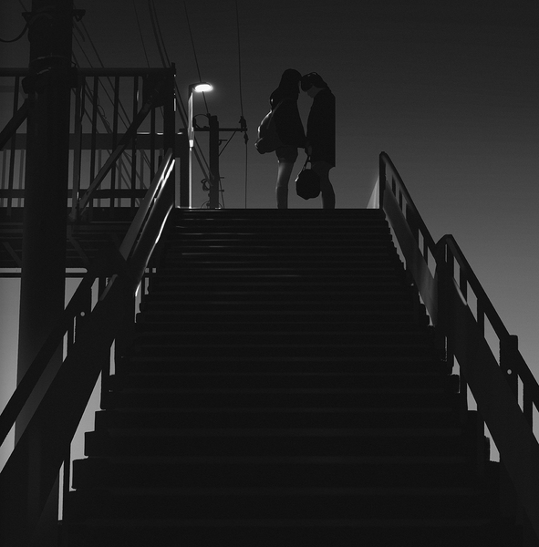
We can see how the output image differs from the input below:

If we set our result as the original image's luma plane in a YUV colour-system, then equalise it, we arrive at this result:
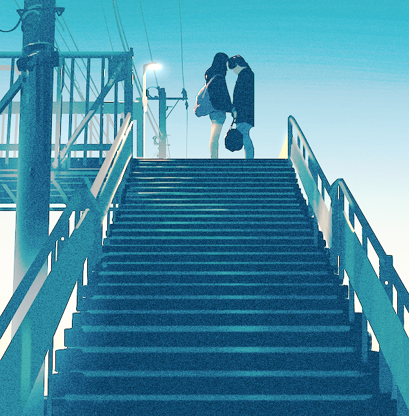
The result of the filtering can be obvious when compared to the equalised version of the original image:
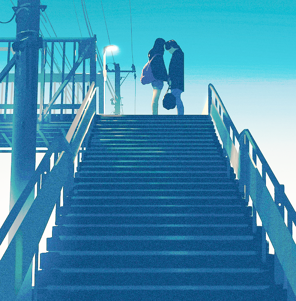
We can clearly see that in the last image, the equalised version of the original image, the details and luminance deviations aren't as clearly visible as in the previous image, which was filtered, then used as luma plane, then equalised.
Enhanced pointillism with canny edge detector
The input image can be seen below:

You can use pontilhismo.cpp
to create pointillism art.
The generated art can be seen below:
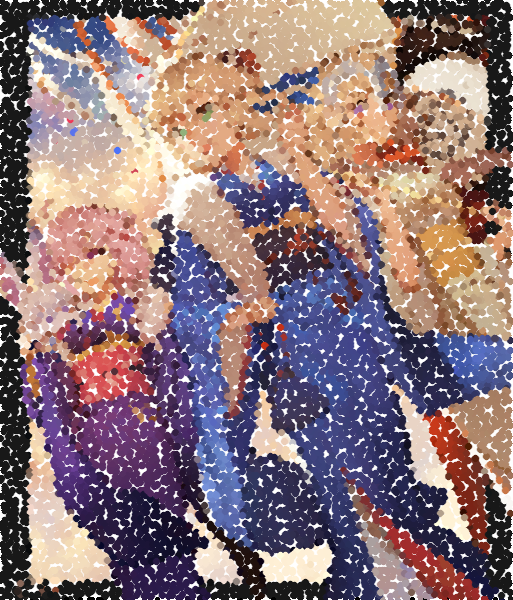
We apply the canny edge detector in order to find edges in the original image, which then allows us to use the extra information to better reconstruct its characteristics in our pointillism art.
You can see the code below:
#include <iostream>
#include <opencv2/opencv.hpp>
#include <fstream>
#include <iomanip>
#include <vector>
#include <algorithm>
#include <numeric>
#include <ctime>
#include <cstdlib>
using namespace std;
using namespace cv;
#define STEP 5
#define JITTER 3
#define RAIO 3
int top_slider = 10;
int top_slider_max = 200;
char TrackbarName[50];
Mat image, border, frame, points, tmp, result;
void on_trackbar_canny(int, void *){
Canny(image, border, top_slider, 3 * top_slider);
imshow("canny", border);
}
int main(int argc, char **argv){
vector<int> yrange;
vector<int> xrange;
int width, height;
int x, y;
int r, g, b;
image = imread(argv[1]);
srand(time(0));
if (!image.data){
cout << "nao abriu" << argv[1] << endl;
cout << argv[0] << " imagem.jpg";
exit(0);
}
width = image.size().width;
height = image.size().height;
xrange.resize(height / STEP);
yrange.resize(width / STEP);
iota(xrange.begin(), xrange.end(), 0);
iota(yrange.begin(), yrange.end(), 0);
for (uint i = 0; i < xrange.size(); i++){
xrange[i] = xrange[i] * STEP + STEP / 2;
}
for (uint i = 0; i < yrange.size(); i++){
yrange[i] = yrange[i] * STEP + STEP / 2;
}
random_shuffle(xrange.begin(), xrange.end());
points = Mat(height, width, CV_8UC3, Scalar(CV_RGB(255, 255, 255)));
for (auto i : xrange){
random_shuffle(yrange.begin(), yrange.end());
for (auto j : yrange){
x = i + rand() % (2 * JITTER) - JITTER + 1;
y = j + rand() % (2 * JITTER) - JITTER + 1;
r = image.at<Vec3b>(x, y)[2];
g = image.at<Vec3b>(x, y)[1];
b = image.at<Vec3b>(x, y)[0];
circle(points, cv::Point(y, x), RAIO, CV_RGB(r, g, b), -1, CV_AA);
}
}
namedWindow("pontos");
imshow("pontos", points);
for (int round = 0; round < 2; round++){
sprintf(TrackbarName, "Threshold inferior", top_slider_max);
namedWindow("canny");
createTrackbar(TrackbarName, "canny",
&top_slider,
top_slider_max,
on_trackbar_canny);
on_trackbar_canny(top_slider, 0);
waitKey();
Mat aux = Mat(height, width, CV_8U, Scalar(0));
for (int i = 0; i < height; i++){
for (int j = 0; j < width; j++){
if (border.at<uchar>(i, j) > 0 && aux.at<uchar>(i, j) == 0){
r = image.at<cv::Vec3b>(i, j)[2];
g = image.at<cv::Vec3b>(i, j)[1];
b = image.at<cv::Vec3b>(i, j)[0];
circle(points, cv::Point(j, i), RAIO - round, CV_RGB(r, g, b), -1, CV_AA);
circle(aux, cv::Point(j, i), 2 * (RAIO - round), CV_RGB(255, 255, 255), -1, CV_AA);
}
}
}
namedWindow("pontos");
imshow("pontos", points);
waitKey();
}
return 0;
}
canny_points.cpp
The algorithm follows a very simple logic, starting from the already shown previous pointillism art, it'll paint new circles 2 additional times as the user chooses 2 canny thresholds. The original circle radius is decreased by 1 each time, and the idea is that we choose a higher threshold in the second run so we can paint smaller circles for more important lines, which will make those lines more visible.
To prevent the algorithm from paiting circles on top of one another inside an iteration (note that it can, and should, paint new circles on top of circles painted on previous iterations), we also paint doubled radius circles on an auxiliary matrix and use it as a rule that prevents new circles from being painted if the equivalent position in it has been painted before. A doubled radius is used to prevent overlapping.
You can see the first threshold used, and the art after the new circles were painted:
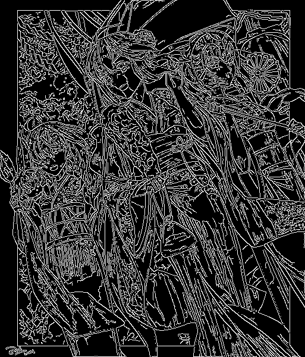
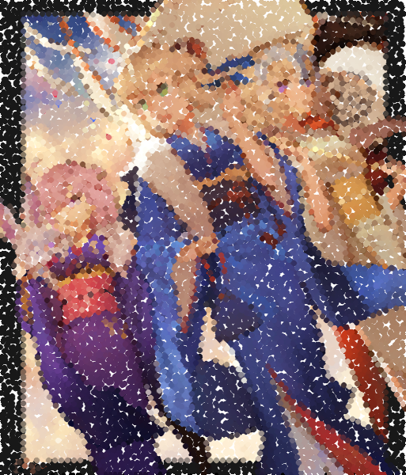
And you can also see the second threshold used, and the even smaller circles:
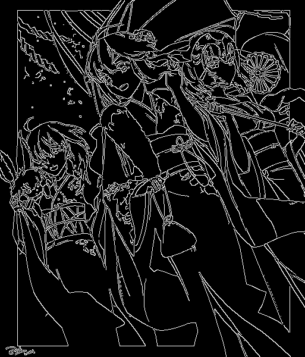

The end result is a pointillism art that better shows transitions and more accurately draw the original lines. Note that the result can be controlled with the thresholds chosen. Since the first threshold was fairly generous, the end result looks incredibly filled with almost no blank white-space.
You can see all the steps done to the original image in order in the following GIF:
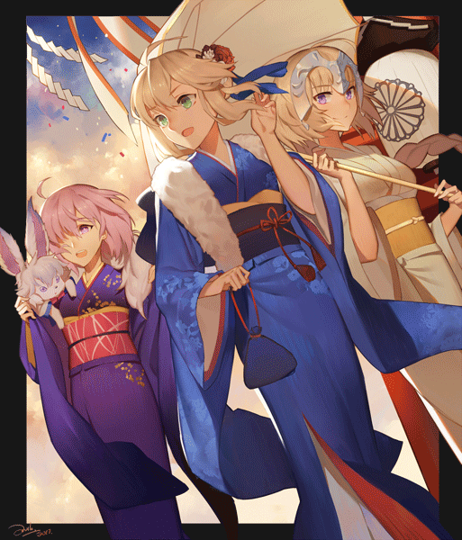
K-means art
K-means clustering is a unsurpervised data-mining machine learning algorithm used to classify elements. The algorithm has several characteristics, the first of them is that it'll always find the specified number of classes regardless of the topography of the data-set (the optimal number of classes can be discovered through the elbow method). The second prominent characteristic, and the most important one for us in this demonstration, is that since our centroids (which classify elements) have their starting locations randomised, each run will tend to result in slightly different final centroid locations and therefore slightly different element classifications.
With this brief introduction, now we can start learning how the algorithm actually works. The first thing done is the creation of the initial centroids,
the most common starting method is to simply randomly throw them anywhere (we'll understand why later) and simply let the algorithm itself converge to a
sane state in the end. Usually, you'll want to run the program multiple times and pick your best run though.
Since the initialisation is important, there are multiple different initialisation methods that aim to be more accurate than simply throwing the centroids anywhere
randomly. In this demonstration our aim is to show how different our results can be, so we'll randomly initialise our centroids.
With the creation of the centroids done, now we need to understand what centroids even are and what they do. This is very simple and straightforward, a centroid is simply a point in our data-set which all the elements will get their distances measured against and classified with a label that identifies which of the centroids is closer to it. So, in other words, we classify each element in the class represented by the closest centroid.
Once we finish classifying all the elements, for each centroid we calculate the summation of all the distances between this given centroid and all the elements
that were classified in its class. This median will result in a vector that points exactly to the middle of all the elements classified by a given centroid.
Then, we move each centroid to the new calculated position (in the middle of the elements that were classified by the centroid), and redo all the classification
process all over again. We repeat this step until it reaches the iteration count limit, or when there aren't any classification differences between consecutive
iterations anymore.
All those steps can be easily seen in the following GIF:

The code can be seen below:
#include <opencv2/opencv.hpp>
#include <cstdlib>
using namespace cv;
int main(int argc, char **argv) {
int nClusters = 12;
Mat rotulos;
int nRodadas = 1;
Mat centros;
Mat img = imread(argv[1]);
Mat samples(img.rows * img.cols, 3, CV_32F);
for (int i = 0; i < 10; i++) {
for (int y = 0; y < img.rows; y++) {
for (int x = 0; x < img.cols; x++) {
for (int z = 0; z < 3; z++) {
samples.at<float>(y + x * img.rows, z) = img.at<Vec3b>(y, x)[z];
}
}
}
kmeans(samples,
nClusters,
rotulos,
TermCriteria(CV_TERMCRIT_ITER | CV_TERMCRIT_EPS, 10000, 0.0001),
nRodadas,
KMEANS_RANDOM_CENTERS,
centros);
Mat rotulada(img.size(), img.type());
for (int y = 0; y < img.rows; y++) {
for (int x = 0; x < img.cols; x++) {
int indice = rotulos.at<int>(y + x * img.rows, 0);
rotulada.at<Vec3b>(y, x)[0] = (uchar)centros.at<float>(indice, 0);
rotulada.at<Vec3b>(y, x)[1] = (uchar)centros.at<float>(indice, 1);
rotulada.at<Vec3b>(y, x)[2] = (uchar)centros.at<float>(indice, 2);
}
}
imshow("clustered image", rotulada);
waitKey();
}
return 0;
}
kmeans.cpp
Without further ado, we'll run the k-means algorithm in an image and switch all the colour values to their final classifications. You can see the input image used below:
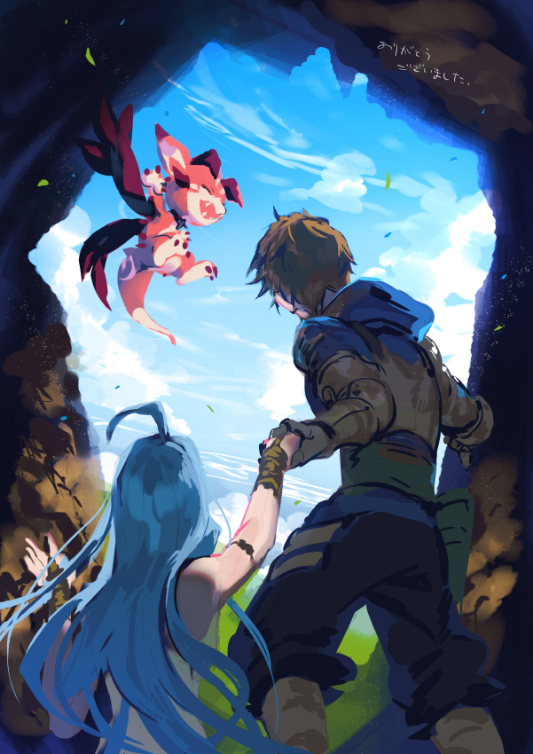
Since the k-means machine learning algorithm has a random centroid starting location, each run will reach a relatively different result. We can see 10 runs of the program below:
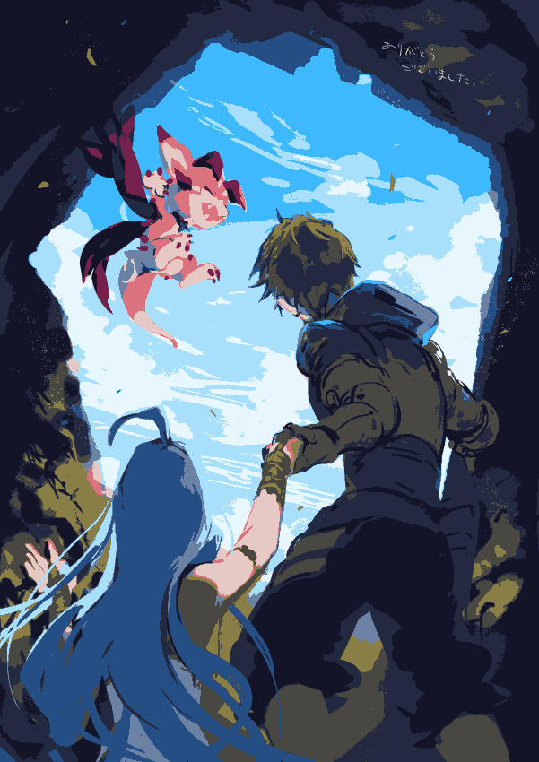